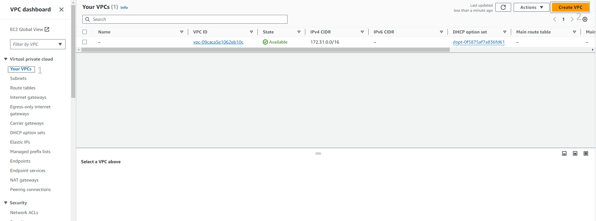
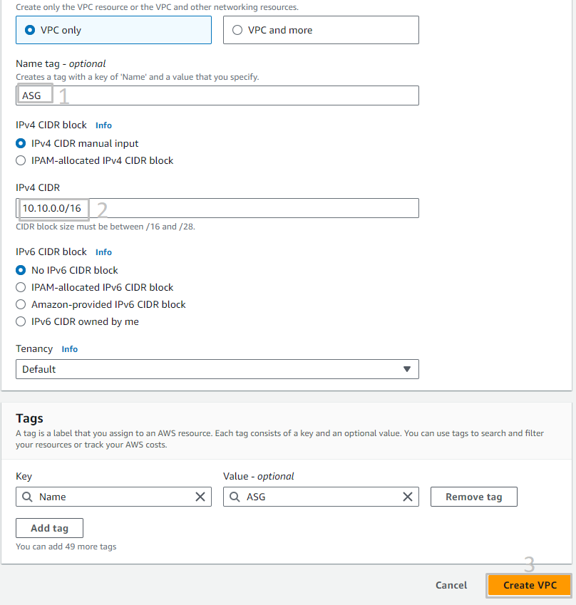

Tran-Minh-Thoai
Tran Minh Thoai
1.
Giới thiệu
2.
Các bước chuẩn bị
2.1
Chuẩn bị VPC và EC2
2.1.1
Tạo VPC
2.1.2
Tạo Public subnet
2.1.3
Tạo Private subnet
2.1.4
Tạo các security group
2.1.5
Tạo EC2 ở Private Subnet và Public Subnet
2.2
Tạo IAM Role
2.3
Tạo CloudWatch Log Groups
2.4
Quản lý session logs của SSM với CloudWatch Logs
2.5
Chuẩn bị môi trường On-Premise
2.6
Chuẩn bị môi trường bằng code(Optional)
3.
Cấu hình Site to Site VPN trên AWS
3.1
Cấu hình Virtual Private Gateway
3.2
Cấu hình Customer Gateway
3.3
Cấu hình Site to Site VPN
4.
Cấu hình VPN Site to Site Trên Fortigate
4.1
Tạo Tunnel IPSEC
4.2
Cấu hình Interface tunnel 1 & 2 trên Fortigate
4.3
Cấu hình Dynamic Route BGP
4.4
Tạo Policy cho VPN
4.5
Kiểm tra tình trạng VPN
5
Dọn dẹp tài nguyên
More
AWS Study Group
English
Tiếng Việt
Clear History
Workshop
Cloud Journey
Last Updated
06-08-2024
Team
Trần Minh Thoại
Trần Văn Thắng
>
Các bước chuẩn bị
>
Chuẩn bị VPC và EC2
> Tạo VPC
Tạo VPC
Tạo VPC
Lab VPC
Truy cập
giao diện quản trị dịch vụ VPC
Click
Your VPC
.
Click
Create VPC
.

Tại trang
Create VPC
.
Tại mục
Name tag
điền
ASG
.
Tại mục
IPv4 CIDR
điền :
10.10.0.0/16
.
Click
Create VPC
.
